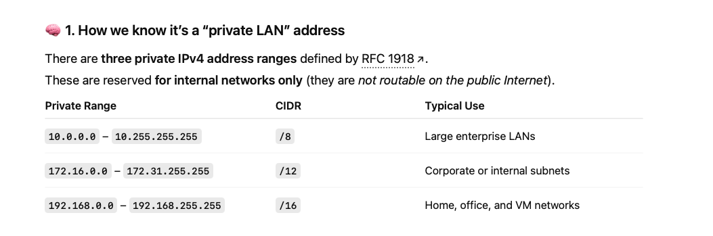

Docker Macvlan Network
Docker Macvlan Network
A macvlan nerwork allows each Docker container to appear on the same Layer 2 network as your host (Ubuntu VM).
-
Each container gets its own unique IP address on your physical LAN (e.g. 192.168.30.x)
-
The containers can be reached directly by other devices on that LAN - without NAT.
Because of that, the macvlan network must be bound to your host's physical network interface (the one actually connected to your LAN or VM bridge).
🧩 2️⃣ Choosing the correct interface to create Mavvlan network
ip a output
ubuntu@pgt:~$ ip a
1: lo: <LOOPBACK,UP,LOWER_UP> mtu 65536 qdisc noqueue state UNKNOWN group default qlen 1000
link/loopback 00:00:00:00:00:00 brd 00:00:00:00:00:00
inet 127.0.0.1/8 scope host lo
valid_lft forever preferred_lft forever
inet6 ::1/128 scope host
valid_lft forever preferred_lft forever
2: enp0s3: <BROADCAST,MULTICAST,UP,LOWER_UP> mtu 1500 qdisc fq_codel state UP group default qlen 1000
link/ether 08:00:27:62:7e:2a brd ff:ff:ff:ff:ff:ff
inet 192.168.30.60/24 brd 192.168.30.255 scope global enp0s3
valid_lft forever preferred_lft forever
inet6 fe80::a00:27ff:fe62:7e2a/64 scope link
valid_lft forever preferred_lft forever
3: docker0: <NO-CARRIER,BROADCAST,MULTICAST,UP> mtu 1500 qdisc noqueue state DOWN group default
link/ether 52:18:4f:1d:0b:aa brd ff:ff:ff:ff:ff:ff
inet 172.17.0.1/16 brd 172.17.255.255 scope global docker0
valid_lft forever preferred_lft forever
inet6 fe80::5018:4fff:fe1d:baa/64 scope link
valid_lft forever preferred_lft forever
ubuntu@pgt:~$
From your ip a output:
2: enp0s3:
inet 192.168.30.60/24
✅ enp0s3 is UP, has a valid IPv4 (192.168.30.60/24), and is your main interface connected to the external network.
That makes enp0s3 the correct interface to use for a macvlan network.
The others:
lo — loopback (ignore)
docker0 — Docker’s internal bridge (not physical, so not usable for macvlan)
So yes, you should use enp0s3 for your macvlan setup.

There are three private IPv4 address ranges defined by RFC 1918. These are reserved for internal networks only (they are not routable on the public Internet).
| Private Range | CIDR | Typical Use |
|---|---|---|
10.0.0.0 – 10.255.255.255 |
/8 |
Large enterprise LANs |
172.16.0.0 – 172.31.255.255 |
/12 |
Corporate or internal subnets |
192.168.0.0 – 192.168.255.255 |
/16 |
Home, office, and VM networks |
ubuntu@pgt:~$ ip route
default via 192.168.30.1 dev enp0s3 proto static
172.17.0.0/16 dev docker0 proto kernel scope link src 172.17.0.1 linkdown
192.168.30.0/24 dev enp0s3 proto kernel scope link src 192.168.30.60
ubuntu@pgt:~$
Create Docker macvlan network
docker network create -d macvlan --subnet=192.168.30.0/24 --gateway=192.168.30.1 -o parent=enp0s3 plc-macvlan
Persist Docker macvlan network:
Accessing docker macvlan network from host machine:
- How Docker macvlan works
When you create a Docker network using the macvlan driver, Docker gives each container its own virtual MAC address and attaches it directly to the physical network via the VM’s NIC (e.g., enp0s3).
Each container looks like a separate device on the LAN — it can communicate directly with:
Other containers on the same macvlan network
Other physical machines on the same LAN
But here’s the catch 👇
The host interface (the Ubuntu VM itself) is not automatically connected to this macvlan network.
This is by design — Linux macvlan interfaces cannot talk to their parent interface (and vice versa).
So the VM’s main NIC (enp0s3) cannot directly send or receive packets to/from containers on the macvlan network.
Question:
How do I create and persist a linux virtual network interface on the ubuntu VM so that I can access the docker containers which I create on the docker macvlan network inside the ubuntu vm on the host, these are the details of how I created the docker macvlan network and the docker container on the ubuntu vm create docker macvlan network on ubuntu vm (which I have sshed into):
-
docker network create -d macvlan --subnet=192.168.30.0/24 --gateway=192.168.30.1 -o parent=enp0s3 plc-macvlan -
create and run the docker container for plc in ubuntu vm :
docker run -d --name st_plc--net plc-macvlan --ip 192.168.30.201 --privileged openplc:v3
I want to access this website on my host machine : http://192.168.30.201:8080/login
Perfect — you’ve explained this clearly, and your goal is exactly right 👏
You already have:
The Ubuntu VM running with IP 192.168.30.60 on interface enp0s3
A Docker macvlan network (plc-macvlan) attached to that interface
A PLC container with IP 192.168.30.201 on that macvlan
Now you want to access that container’s web UI (OpenPLC) from your host machine (e.g., your physical computer running VirtualBox, VMware, or similar).
Let’s go step-by-step and make the setup both functional and persistent.
🧠 Why This Is Needed As you already know:
A macvlan network gives containers their own MAC addresses and puts them directly on the LAN.
But the Ubuntu VM itself (the host of the containers) can’t communicate with them, because Linux doesn’t allow the parent interface (enp0s3) to talk to its macvlan children.
Step 1: Create the macvlan interface (temporary test)
Run these inside your Ubuntu VM (SSH session):
# Create the macvlan0 interface attached to enp0s3
sudo ip link add macvlan0 link enp0s3 type macvlan mode bridge
# Assign a free IP in the same subnet (different from 192.168.30.60 and 192.168.30.1)
sudo ip addr add 192.168.30.254/24 dev macvlan0
# Bring it up
sudo ip link set macvlan0 up
Context: You are running a Docker container inside an Ubuntu VM, and that container is attached to a macvlan network (plc-macvlan). By design, a macvlan network isolates container traffic - the host (your VM) cannot communicate with containers on that macvlan unless you explicitly add a macvlan on the host side too.
So the 3 commands above make the VM itself a part of the same network as the container.
-
sudo ip link add macvlan0 link enp0s3 type macvlan mode bridge -
creates a new virtual network interface called
macvlan0 -
this interface is attached to your physical network interface
enp0s3(the one the VM uses to access your LAN) -
the type macvlan creates a separate interface with its own MAC address
-
mode bridgemeans that traffic onenp0s3will be bridged withmacvlan0- both can send/receive packets in the same Layer 2 domain.
Why is it needed:
-
Docker's
macvlandriver puts containers in the same L2 domain but isolates them from the host. -
By creating
macvlan0, your VM becomes reachable to and from containers in that macvlan network. -
sudo ip addr add 192.168.30.254/24 dev macvlan0 -
Assigns an IP address (192.168.30.254) to the new
macvlan0interface. -
The
/24subnet mask means it is part of the same 192.168.30.x network as your VM (192.168.30.254) and containers (like192.168.30.201). -
it acts as the gateway for your VM to communicate with containers
-
without an IP, the VM can't send packets directly through macvlan0
-
sudo ip link set macvlan0 up -
brings the macvlan0 interface online (equivalent to 'turning it on')
-
by default, new interfaces are down
-
this command activates it so it can actually pass network traffic
After these steps:
VM can now ping and access containers on the plc-macvlan network e.g. 192.168.30.201
ping -I macvlan0 192.168.30.201
To persist the macvlan interface created above:
By default, ip link add changes are temporary and vanish after reboot.
To persist it across reboots, choose one of these methods:
Option 1: create a startup script + systemd service
Step 1:
- create the script:
sudo nano /usr/local/sbin/setup-macvlan.sh
Paste:
#!/bin/bash
ip link add macvlan0 link enp0s3 type macvlan mode bridge
ip addr add 192.168.30.254/24 dev macvlan0
ip link set macvlan0 up
- Make it executable:
sudo chmod +x /usr/local/sbin/setup-macvlan.sh
Step 2:
- Create the systemd service file
sudo nano /etc/systemd/system/setup-macvlan.service
- Paste this:
[Unit]
Description=Setup macvlan0 network interface
After=network.target
[Service]
Type=oneshot
ExecStart=/usr/local/sbin/setup-macvlan.sh
RemainAfterExit=yes
[Install]
WantedBy=multi-user.target
Step 3: Reload and enable the service
sudo systemctl daemon-reload
Enable it to run automatically at reboot
sudo systemctl enable setup-macvlan.service
Test it immediately without rebooting:
sudo systemctl start setup-macvlan.service
Step 4: verify it worked
Check if the interface is up:
ip addr show macvlan0
And verify service status:
sudo systemctl status setup-macvlan.service
To make docker container reachable from VM's default interface :
sudo ip link add macvlan-host link enp0s3 type macvlan mode bridge
sudo ip addr add 192.168.30.250/24 dev macvlan-host
sudo ip link set macvlan-host up
1️⃣ Container is running and reachable from the VM
From your last command:
ping -I macvlan0 192.168.30.201
You get:
64 bytes from 192.168.30.201 ...
✅ This means inside the VM, the container is reachable via the macvlan0 interface. The container is up and responding to pings from the VM itself.
2️⃣ Container is not reachable from the VM’s default interface
When you just run:
ping 192.168.30.201
You get:
Destination Host Unreachable
This happens because Docker macvlan creates an isolated network, and the host VM’s default interface (enp0s3) cannot talk to the macvlan interface directly. This is a known limitation of macvlan:
A host cannot communicate with a container on a macvlan network by default.
3️⃣ How to reach the container from the host machine (your physical machine or host VM)
Since your VM is attached as Bridged Adapter, the host machine is on the same subnet (192.168.30.0/24) as your container. To reach the container:
Option A: Add a macvlan sub-interface on the host machine
You need to create a macvlan interface on your host machine, attached to the same physical network as the VM.
Give it an IP in the same subnet (but not conflicting with gateway, VM, or container IPs).
Example on host:
sudo ip link add macvlan-host link
TROUBLESHOOTING :
ping -I macvlan0 192.168.30.201 # works
ping 192.168.30.201 # fails
1️⃣ What’s wrong currently From docker inspect plc-macvlan: "Subnet": "192.168.30.0/24", "Gateway": "192.168.30.1", "Options": { "parent": "enp0s3" } Your macvlan network for containers is on the same subnet as your VM’s default interface (192.168.30.0/24). Your VM’s IP is 192.168.30.60. Your containers have IPs like 192.168.30.201. Linux cannot send packets from the parent interface (enp0s3) to macvlan child interfaces on the same subnet. This is a known limitation of macvlan: Host ↔ Macvlan containers on the same L2 subnet is blocked unless you use a separate “macvlan-host” interface with a different subnet or routing.
2️⃣ What you need to change Solution: put your macvlan containers on a different subnet, e.g., 192.168.40.0/24. Then: Use a “host macvlan interface” (macvlan-host) on the VM in the same subnet, e.g., 192.168.40.254. Enable IP forwarding + iptables NAT to allow the VM and host to reach the container network.
I will have 4 different docker containers for 4 plcs on the ubuntu vm hence using the same url and the same ssh method of accessing every plc will not make sense, how can I use the unique ip address of each plc container to access the browser
http://localhost:8080/dashboard
ssh -L 8080:192.168.40.201:8080 ubuntu@192.168.30.60
Perfect — that’s exactly the right way to think about this. Since you’ll be running 4 PLC containers, each with a unique IP (e.g., 192.168.40.201, 192.168.40.202, etc.) on the macvlan network, you want to be able to access each PLC’s web interface directly by its IP instead of tunneling everything to localhost:8080. Let’s go step by step 👇 🧠 Why the problem happens The reason you can’t currently access 192.168.40.x IPs from your Remote Desktop host (or from your own PC) is that macvlan networks isolate traffic from the parent host interface. That means: The Ubuntu VM can talk to the containers ✅ But the Remote Desktop host (the VM’s hypervisor host) cannot ❌ Nor can your own machine (accessing via Remote Desktop or SSH) ❌ So, even though the containers have unique IPs, those IPs exist only inside the VM’s internal macvlan network.
🧩 To fix this — you have two design options: Option 1: Add a second adapter (NAT or Host-only) + iptables forwarding This approach lets you access each PLC by its unique IP directly — without using SSH tunneling or localhost. Step 1: Add another network adapter to your Ubuntu VM In your VM settings (in VirtualBox, VMware, etc.): Keep the Bridged Adapter (this is your current enp0s3). Add a second adapter: Type: NAT (or Host-only) Name: automatically created, e.g. enp0s8 in Ubuntu. This will give your VM a second IP (say, 10.0.2.15 for NAT or 192.168.56.101 for host-only). Step 2: Enable IP forwarding Inside the Ubuntu VM: sudo sysctl -w net.ipv4.ip_forward=1
To persist it: echo "net.ipv4.ip_forward=1" | sudo tee -a /etc/sysctl.conf sudo sysctl -p Step 3: Forward each PLC port range Let’s say you have these PLC containers: PLC Container IP Web Port External Port PLC1 192.168.40.201 8080 8081 PLC2 192.168.40.202 8080 8082 PLC3 192.168.40.203 8080 8083 PLC4 192.168.40.204 8080 8084
Add forwarding rules:
sudo iptables -t nat -A PREROUTING -p tcp -d
sudo iptables -t nat -A POSTROUTING -j MASQUERADE
Replace